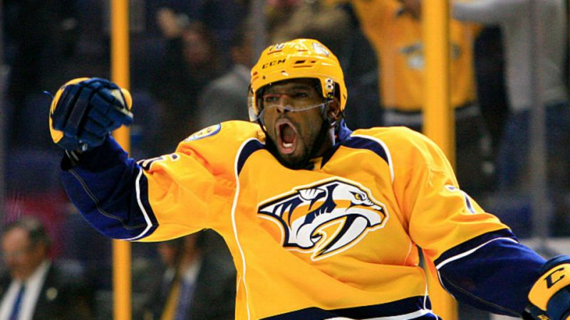

NHL
THE IMPORTANCE OF ONE PLAYER


Self promoting is not commonly known in the world of hockey.
A sport that is known to be more quiet and out of the spotlight, the players
have mostly done the same. Recently however, players have
been more intune with self-promoting.
Last year Sidney Crosby (Pittsburgh Penguins) earned $4.5 million in endorsement dollars.
This is no comparison to the likes of Lebron James or Peyton Manning,
who each earned $44 million and $12 million last year,
or the Houston Rockets’ James Harden, who just signed an endorsement
deal with Adidas that will pay him over $15 million per season. It is interesting
that hockey players aren't usually as involved with brands or endorsed by certain
companies wanting them to be the face of their brand. This is a strong statement
to understand that some of us don't know the names of famous hockey players (other than
the household names like Wayne Gretzky). But we know the names of famous football players
simply because we see them on ads. This is a powerful statement when it comes to branding yourself.
PK Subban (Nashville Predators) has become apart of this branding spotlight this year. Known for his
budding personality and tailored suits, Subban has gained attention. But not just attention, respect.
The NHL has progressively evolved to embracing Subban’s
personality. When Subban was featured in a backstage video
series in 2014, the NHL media gained popularity which also
means they gained followers. They changed their approach to
marketing which helped them gain more of a following. Another
popular example would move towards social media. When the LA Kings
tweeted their victory over the Vancouver Canucks (2012), fans liked
that. Fans retweeted causing news to flow through many different mediums.
All of this is a great example of how important a player can be for a team.
Whether it is for the NHL or any team, a player can cause fandom, which markets
not just them personally, but the team.
Subban has signed sponsorship deals with Samsung, Gatorade, RBC, Degree, Boston Pizza, Hyundia, and Nike